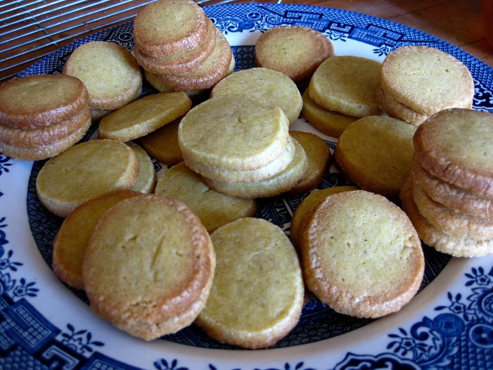

メニュー
メニュー
メニューと価格は準備中です。確認でき次第、こちらに掲載します。
| メニュー | 準備中 |
|---|---|
| 価格 | 準備中 |
| ご予約 | 準備中 |
下の写真は、パンやおやつのイメージを伝えるためのフリー素材です。お店で提供しているものではなく、提供メニューを示すものでもありません。
 黄
黄 藍
藍 朱
朱 黄
黄
藍 藤
藤メニュー
メニューと価格は準備中です。確認でき次第、こちらに掲載します。
| メニュー | 準備中 |
|---|---|
| 価格 | 準備中 |
| ご予約 | 準備中 |
下の写真は、パンやおやつのイメージを伝えるためのフリー素材です。お店で提供しているものではなく、提供メニューを示すものでもありません。
黄藍朱黄
藍藤